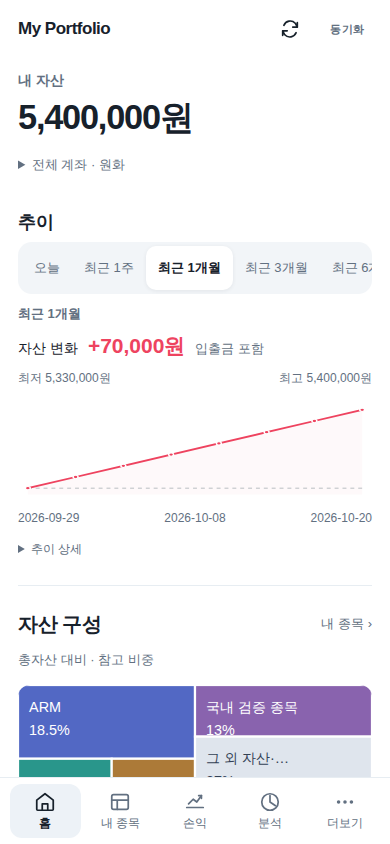
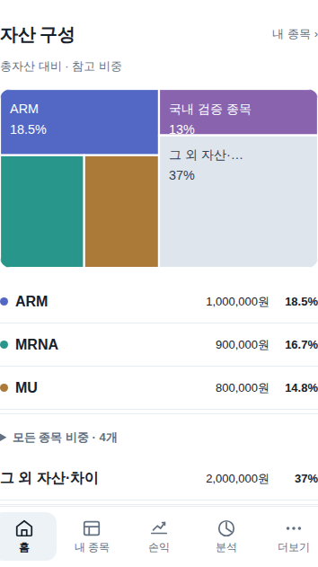
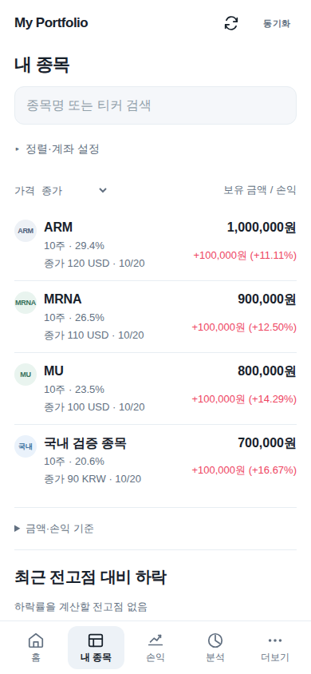

My Portfolio · Build214
홈은 자산 현황,
종목 판단은 내 종목에서
A안을 기본 방향으로 반영했습니다. 홈은 내 자산 → 추이 → 자산 구성입니다. 정해진 점검 순서 없이 ‘내 종목’에서 원하는 종목을 선택합니다.
아래 화면은 같은 가상 계좌·기간·390px 조건이며 실제 개인 자산이나 메모가 아닙니다.
이전 · 종목 점검 중심 변경 · 자산 구성 중심
변경 · 자산 구성 중심
자산 구성

내 종목 · 원하는 종목 선택
- 홈 탭 이름은 ‘홈’. 점검 카드·다음 종목·판단 기록·가격 알림은 홈에서 제거했습니다.
- 자산 지도는 원화 평가액 기준입니다. 작은 종목도 목록에서 금액과 비중을 확인할 수 있습니다.
- ‘그 외 자산·차이’를 현금으로 단정하지 않습니다. 일부 평가액이 없으면 ‘일부 미확인’을 표시합니다.
- 기존 판단 기록과 가격 알림은 내 종목 목록 아래에 있습니다. 저장·재열람·비교·초안·재시도 기능은 유지합니다.
- 자산 변화의 ‘입출금 포함’, 손익의 ‘일부 미계산’ 표시는 유지합니다.
세 가지 방향 비교 · 앱 열기
검증: Chromium·WebKit, 390·402·430px, 확대, 기간 유지, 목록 복귀, 판단 저장·응답 유실·재시도·다음 접속 재열람. 브라우저 검증이며 실제 아이폰의 Face ID·홈화면 앱 재실행·실제 키보드는 별도 확인이 필요합니다.